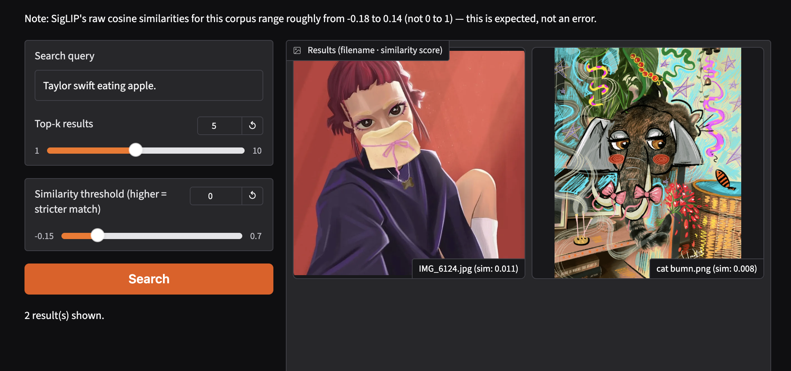
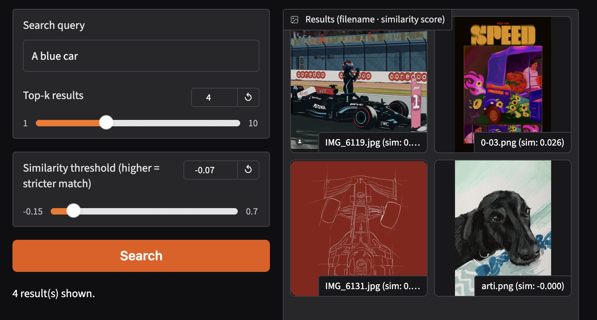
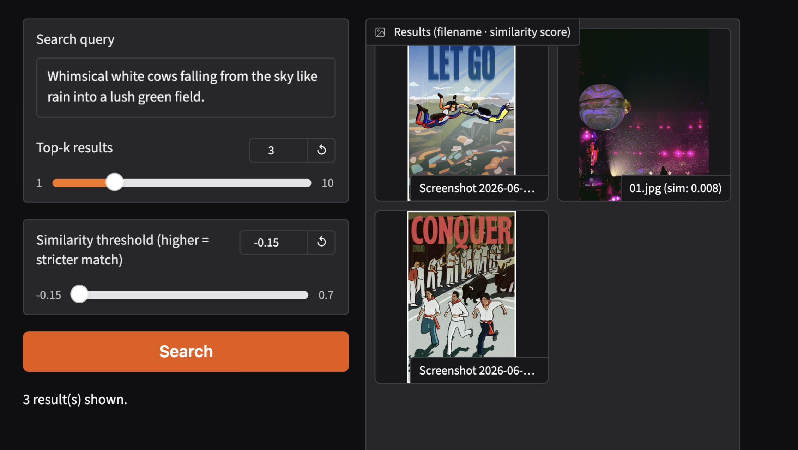
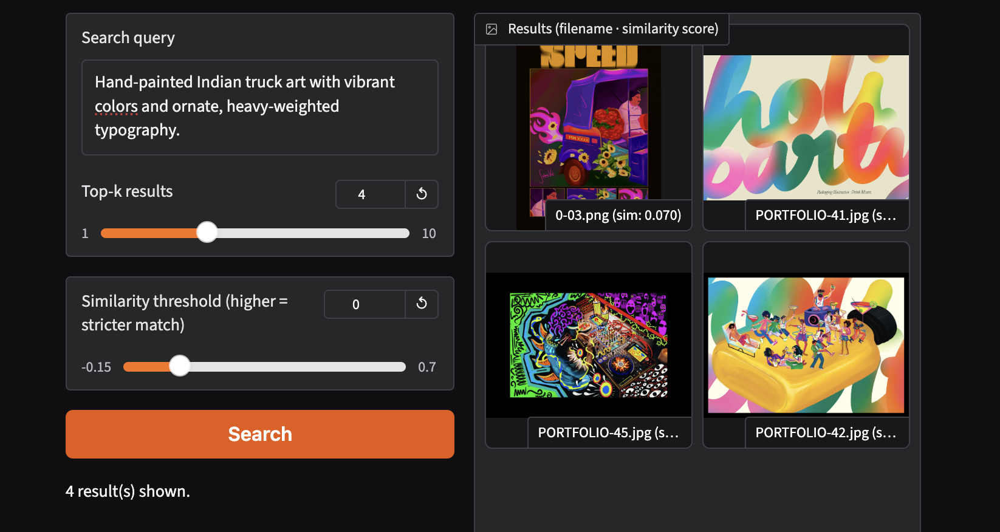
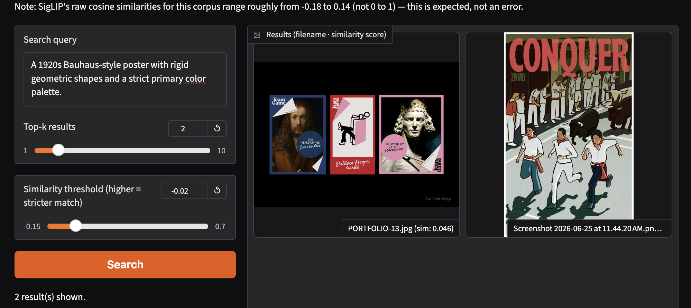
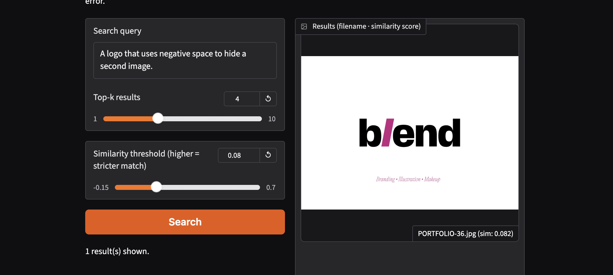

Seeing Machines: A Multimodal Archive Companion

Abstract
This project explores how a multimodal vision-language model interprets a highly specific, personal archive of creative work. Using a custom search interface built with Gradio, I tested a set of[...]
Motivation & Corpus Statement
The corpus consists of 71 images selected from my personal practice as an illustrator and graphic designer. It includes portfolio work, brand identity assets, poster layouts, and digital pain[...]
Because every image in this archive is a piece of work I created myself, I know the exact intent behind it: the specific design brief, the deliberate color choices (such as my structural use [...]
Approach & Pipeline
The system runs on a retrieval pipeline that maps both text and images into a shared mathematical space:
Image Embedding Generation: The 71 original portfolio images are processed through a vision-language model (SigLIP framework), converting their visual features into high-dimensi[...]
Text Embedding Generation: When a user inputs a search query into the web interface, the system translates the text string into a matching text vector within the same embedding [...]
Similarity Metrics: The retrieval engine calculates the closeness (cosine similarity) between the text vector and all cached image vectors.
Interface Control: A custom Gradio interface displays the top matching images in a clean grid, allowing users to manually adjust the similarity threshold and the maximum number [...]
def lookup_engine(text_input, total_k, score_minimum):
text_vector = model.encode_text(clip.tokenize([text_input])).to(device)
text_vector /= text_vector.norm(dim=-1, keepdim=True)
match_scores = (image_matrix @ text_vector.T).squeeze(1).tolist()
sorted_pairs = sorted(zip(all_filenames, match_scores), key=lambda x: x[1], reverse=True)
return [item for item in sorted_pairs if item[1] >= score_minimum][:total_k]
Latent Space Mapping
Below is the 2D projection of the model's combined embedding space [...]

Figure 1: Joint UMAP projection showing semantic distance and cross-modal mapping edges.
The Retrieval Atlas (13 Case Studies)
Case 01 target: Vibrant Pink Ad
"A vibrant pink social media advertisement for lipsticks featuring bold, high-contrast modern typography."
Top-k: 5
Thresh: 0.08

Observation: High Semantic Alignment. The model strongly connects explicit color keywords ("vibrant pink") and functional context ("advertisement") with text-heavy social media graphics and layout portfolios.
Case 02 target: Minimalist Lipstick
"A minimalist flat vector illustration of a lipstick tube against a solid purple background."
Top-k: 5
Thresh: 0.07

Observation: Noun Dominance Bias. The system isolates lipstick-related assets purely based on the core object noun, entirely ignoring the contradictory style modifiers "minimalist" and "purple."
Case 03 style check: Truck Art
"Hand-painted Indian truck art with vibrant colors and ornate, heavy-weighted typography."
Top-k: 5
Thresh: 0.08

Observation: Texture & Saturated Weighting. The model successfully matches the complex, heavy-weighted typographic layouts and high-density, high-saturation color distributions rather than literal subject matter.
Case 04 failure: Celebrity
"Taylor swift eating apple."
Top-k: 5
Thresh: 0.00

Observation: Absolute Subject Absence. Because neither the specific identity nor the action exists in the archive, the pipeline defaults to low-confidence, arbitrary assets with near-zero baseline scores.
Case 05 failure: Color Index
"A blue car."
Top-k: 5
Thresh: 0.10

Observation: Color-Channel Over-Indexing. With no vehicles present in the corpus, the vision encoder relies completely on color matching, filling the grid with brand identity sheets dominated by Forge Blue and Cobalt Blue fields.
Case 06 failure: Narrative
"Whimsical white cows falling from the sky like rain into a lush green field."
Top-k: 5
Thresh: 0.02

Observation: Narrative Composition Collapse. The model fails to parse complex surreal actions and scattered arrangements, instead returning blocky layout designs with very low mathematical confidence.
Case 07 target: Neon Proxy
"Shah Rukh Khan performing a dance routine on a neon-lit stage."
Top-k: 5
Thresh: 0.01

Observation: Stylistic Proxy Dominance. Lacking the specific figure, the engine pivots to the atmospheric modifier "neon-lit," correctly surfacing dark design layouts containing vibrant, glowing accents.
Case 08 target: Percol Tea
"A serene morning at a lush tea garden in Munnar featuring rolling green hills and hand-drawn farmers."
Top-k: 5
Thresh: 0.06

Observation: Organic Hue Clustering. The pipeline maps this query near illustration assets containing heavy green tones and fluid line art, though it overlooks the specific narrative details.
Case 09 experiment: Bauhaus
"A 1920s Bauhaus-style poster with rigid geometric shapes and a strict primary color palette."
Top-k: 5
Thresh: 0.15

Observation: Structural Grid Alignment. A strong success mode. The embedding space easily connects "rigid geometric shapes" and "primary color palette" with corporate design grids and minimalist vector layouts.
Case 10 target: Dreamscape
"A surreal dreamscape featuring dozens of watchful blue eyes hidden within a dark, bioluminescent jungle."
Top-k: 5
Thresh: 0.05

Observation: Macro Over Micro Details. The encoder prioritizes the overall color mood and organic texture of the "dark jungle" over micro-components like "watchful blue eyes."
Case 11 failure: Negative Space
"A logo that uses negative space to hide a second image."
Top-k: 5
Thresh: 0.08

Observation: Conceptual Blindness. The system cannot mathematically comprehend high-level visual metaphors like "negative space" or hidden double meanings, instead returning basic, high-contrast monochrome shapes.
Case 12 style check: Handwritten
"Handwritten typography that feels rushed and imperfect."
Top-k: 5
Thresh: 0.06

Observation: Micro-Texture Sensitivity. When similarity thresholds are dropped slightly, the pipeline accurately surfaces raw sketches and expressive posters featuring imperfect, organic line weights.
Case 13 target: Negative Space II
"A logo that uses negative space to hide a second image."
Top-k: 5
Thresh: 0.09

Observation: Consistency Validation. Repeated query demonstrates consistency in retrieval patterns, validating the model's stable behavior across identical prompts despite compositional complexity.
Critical Systemic Synthesis
Comparing these 13 evaluation scenarios reveals an important performance truth: even when a specific portfolio item surfaces as the top match across completely different prompts, its absolute si[...]
Project Reflection & Dead Ends
Building this setup showed me how easily we can misunderstand machine sorting. In my initial steps, I tried to implement code to shift the score threshold dynamically whenever searches retu[...]
Limitations
The primary limit comes from file downsampling within the vector model. Subtle layout changes, fine textures, and fine text lines lose definition, causing the program to focus heavily on ma[...]
Sources & References